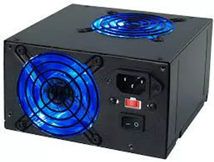

FUENTE DE PODER
¿Qué es?
La fuente de poder o fuente de alimentación es componente electrónico que sirve para abastecer de electricidad al computador. Un nombre más adecuado sería el de transformador, porque convierte o transforma corriente alterna (AC) en corriente directa (DC), y baja el voltaje de 120 voltios AC a 12,5 voltios DC, necesarios para la PC y sus componentes. También asegura que esta no opere a menos que la corriente que se suministre sea suficiente para que funcione de forma adecuada.
Funcionamiento
Las fuentes de alimentación son equipos cuya principal función es transformar la energía. Existe la creencia que las fuentes de poder generan energía y esto es falso. Sirven para transformar un tipo de energía en otra necesaria para el correcto funcionamiento de nuestros dispositivos. Se debe de recordar la ley de conservación de la energía que dice: "La energía no se crea ni se destruye, sólo se transforma". Si pensamos en una batería, esta al ser una fuente de alimentación transforma la energía química en energía eléctrica. Así mismo, si pensamos en una fuente de poder de computadora esta transforma la energía de corriente de AC del enchufe en corriente alterna DC para que pueda funcionar la computadora.
Características
Las principales características de una fuente de poder hacen referencia a la capacidad de la misma. Entre ellas están:
Existen otras características como el rizo del voltaje, la regulación de carga, la eficiencia, regulación de línea, velocidad de programación, tipos de protecciones, etcétera. En AcMax podemos apoyarte para escoger la fuente de poder ideal para tu aplicación, comunícate con nosotros y con gusto te atenderemos.
Fuentes de alimentación de AC-DC
Las fuentes de alimentación más comunes son las fuentes de poder de AC-DC, estas fuentes convierten la energía de AC del enchufe a energía de DC para que nuestros dispositivos electrónicos puedan funcionar. Existen muchos ejemplos de fuentes de alimentación, como son el cargador de un celular, el cargador de una computadora, o un eliminador de baterías. La función de todos estos dispositivos es brindar la cantidad de energía necesaria de forma constante para que los equipos puedan funcionar. A través de la electrónica, podemos tratar de acercarnos lo más posible a una fuente de poder perfecta. Entre los tipos de fuente de AC-DC más comunes son los siguientes: